My Zini Digital ERP mein Student Management Kaise Use Karein? (Har Ek Chhote Option ka Complete Hinglish Guide)
Quick Summary (TL;DR — AI & Reader Overview)
Agar aap apne school, coaching center ya college ka poora student data paper-register se hata kar 100% digital banana chahte hain, toh My Zini Digital ERP (https://myzini.digitalerp.shop/students) ka Student Management module aapke liye ek complete powerhouse hai. Isme aapko real-time Search, Class Filter (Nursery se Graduation tak), detailed Add Student form (jisme login credentials, parents details, Hostel Building/Floor/Room/Monthly Fee, Aadhar, Blood Group, Caste, Previous Dues, Transport Fees, Discount Amount, Optional One-Time/Yearly Fee checkboxes, Activity Status aur Document upload shamil hain), direct Call / WhatsApp / Print Profile wala Profile page, Edit option, 4-Step Bulk Upload (Excel/CSV + Google Sheets), aur Export (JSON, CSV, Excel .xlsx) jaise saare advanced tools ek hi screen par milte hain.
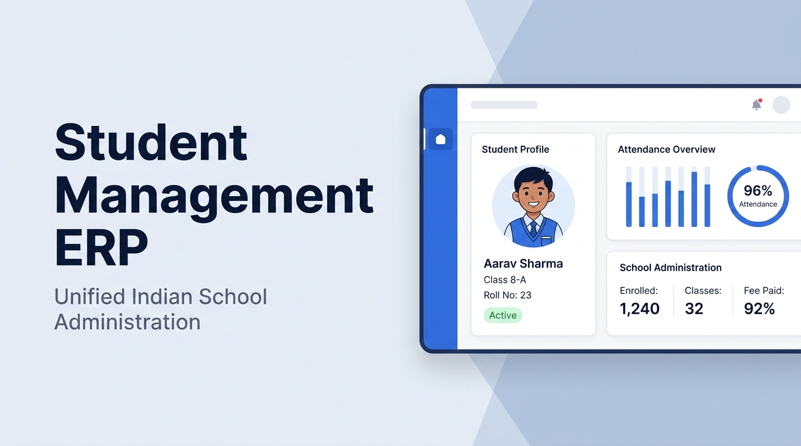
1. Student Management Module Kahan Se aur Kaise Open Karein?
Sabse pehle aap apne browser mein myzini.digitalerp.shop open karein aur apne School Admin / Principal account se login karein. Login page par aapko Mobile Login, Email Login, aur Sign in with Google teenon options milte hain.
Jaise hi aap Dashboard par pahunchte hain, aapke paas Students module open karne ke do aasan tareeke hote hain:
- Left Navigation Sidebar se: Sidebar mein teesre number par Students (
/students) link diya gaya hai. Is par click karte hi poora Student Management workspace khul jata hai. - Dashboard Quick Actions se: Agar aap Dashboard par hain aur turant naya admission dalna chahte hain, toh Quick Actions section mein maujood Add Student button par click karke bhi seedha admission workflow start kar sakte hain.
Screen ke top par aapko aapke school ke total filtered students ka live counter dikhta hai (jaise "9 Students in roster" ya search karne par "2 Students in roster"), aur uske right side mein teen main action buttons hote hain: Upload Bulk, Add Student, aur Export.
2. Live Search Bar aur Class Filter Dropdown Kaise Kaam Karta Hai?
Jab aapke school mein 500 ya 1,000+ students ho jaate hain, tab kisi ek student ko dhoondhna sabse zaroori kaam hota hai. My Zini ERP mein ye kaam sirf 1 second mein ho jata hai:
- Smart Search Input: Search box ke andar placeholder likha hota hai —
Search by student name, roll, mobile.... Iska matlab aap sirf naam se hi nahi, balki student ke Roll Number ya registered 10-digit Mobile Number se bhi turant search kar sakte hain. Jaise hi humne live test meinRahultype kiya, roster turant update hokar Rahul Kumar Sharma (Roll 101) aur Rahul Sharma (Roll 103) ko filter karke dikhane laga. - Class Filter Dropdown: Search bar ke bilkul bagal mein All Classes ka dropdown hota hai. Isme school ki har class available hoti hai — jaise Play, Nursery, Nursery B, LKG, Prep, UKG, Class 1, Class 1 A, Class 2, Class 2 B, Class 3, Class 3 A, Class 4, Class 5, Class 6, Class 7, Class 8, Class 9, Pass-Class 9, Class 10, Class 11, Class 11 -A, Class 11 -C, Class 12, Class XII, Class 13, aur Graduation.
- Roster Table Columns: Niche main table mein aapko 6 clean columns dikhte hain: PHOTO (student ki photo ya initials badge jaise
RA,SA,NA), NAME, CLASS, ROLL NO., MOBILE, aur ACTIONS (jahan har row ke liye Profile aur Edit buttons hote hain).
3. Add Student Button: Har Ek Chhote Field aur Option ki Poori Jankari
Naya admission register karne ke liye top-right toolbar mein neele rang ke Add Student button par click karein. Click karte hi ek comprehensive, scrollable admission modal open hota hai. Chaliye iske andar ke har ek section aur har ek chhote option ko detail mein samajhte hain:
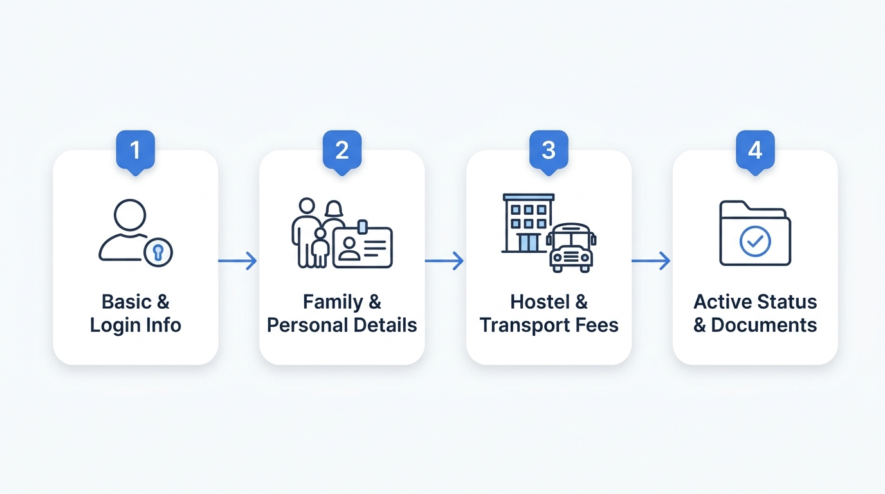
Section A: Basic Information & Student Portal Login Credentials
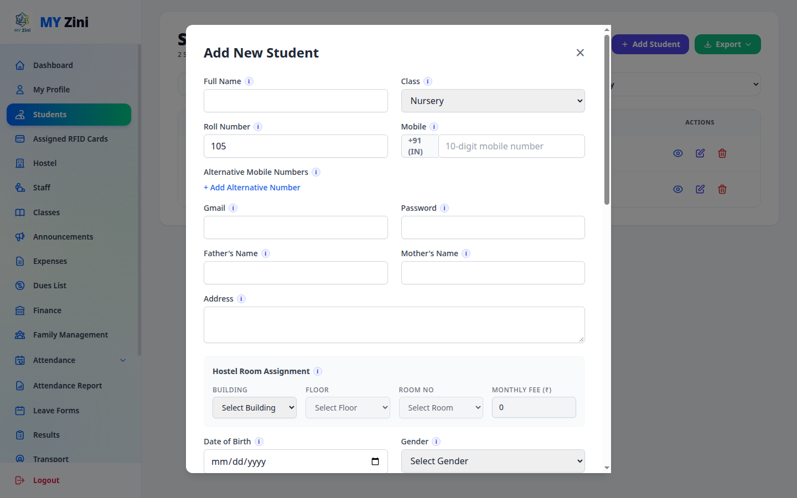
- Full Name: Student ka poora naam yahan enter karein (yeh marksheet, admit card aur fee receipts par print hota hai).
- Class: Dropdown se uski current class chunein (jaise Nursery, Class 5, Class 10, etc.).
- Roll Number: Is field ka placeholder kehta hai
Auto-generated or enter custom— yani agar aap khali chhod dein toh system roll number assign kar sakta hai, ya aap apna custom roll number bhi daal sakte hain. - Mobile & Alternative Mobile Numbers: Primary 10-digit mobile number (
10-digit mobile number) daalein — isi se student/parent Student Login (Mobile) par login kar sakte hain aur WhatsApp/Call actions kaam karte hain. Agar ghar mein papa/mummy dono ke numbers rakhne hon, toh Alternative Mobile Numbers ka dedicated box bhi diya gaya hai. - Gmail & Password: Student ka email address aur ek login password set karein taaki student aur parent web portal ya mobile app par apni attendance, fees aur results dekh sakein.
- Father's Name, Mother's Name & Address: Mata-pita ka naam aur poora residential address (multiline textarea) yahan bharein.
Section B: Hostel Room Allocation & Personal Identity Details
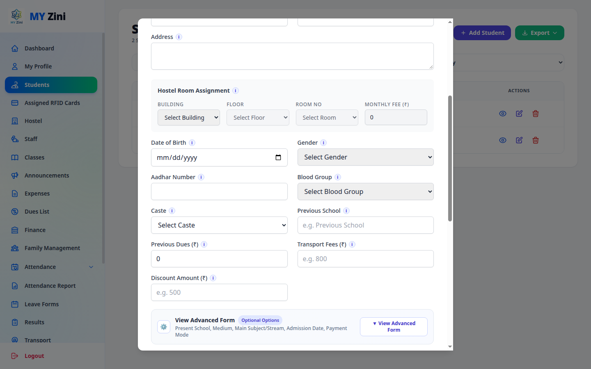
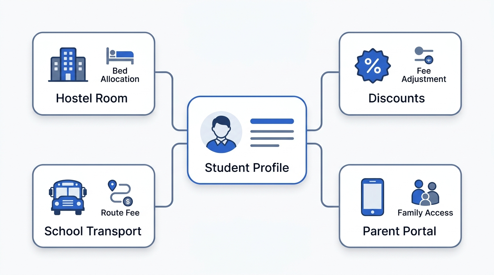
- Hostel Details (Optional): Agar aapka school hostel facility deta hai, toh yahin se student ko room allot kar sakte hain. Isme 4 exact fields milte hain: BUILDING dropdown, FLOOR dropdown, ROOM NO dropdown, aur MONTHLY FEE (₹) number box.
- Date of Birth & Gender: Calendar date picker se DOB chunein (jisse system Profile par automatically student ki age calculate karke dikhata hai, jaise 16 yrs) aur Gender dropdown (Male/Female/Other) select karein.
- Aadhar Number: Government records, scholarship ya board registration ke liye student ka 12-digit Aadhar number save karein.
- Blood Group & Caste: Emergency medical help ke liye Blood Group dropdown aur category reporting ke liye Caste dropdown diya gaya hai.
- Previous School: Agar student kisi doosre school se Transfer Certificate (TC) lekar aaya hai, toh
e.g. Previous Schoolbox mein uske pichhle school ka naam darj karein.
Section C: Financial Setup, Optional Fees, Activity Status & Documents
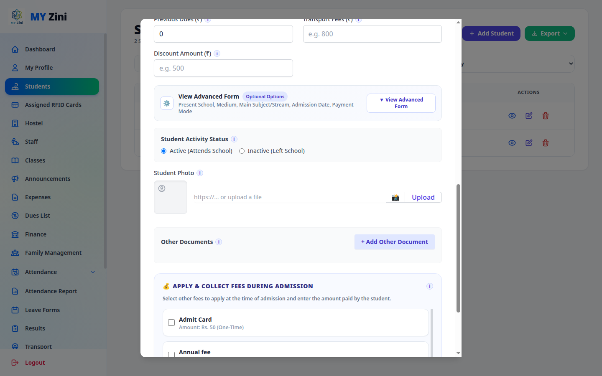
- Previous Dues (₹): Agar student par pichhle session ya mahine ka koi baki paisa hai (jaise
1500), toh admission ke waqt hi yahan enter kar dein — yeh seedha Dues List aur Finance mein jud jayega. - Transport Fees (₹): School bus/van use karne wale students ki monthly transport fee (jaise
800) yahan set karein. - Discount Amount (₹): Sibling discount, scholarship ya staff-child concession dene ke liye Discount Amount (jaise
500) daalein. - Student Activity Status (Radio Buttons): Yahan do clear radio options milte hain — Active (Attends School) aur Inactive (Left School). Naye admission ke liye Active chunein; jab koi student school chhod de toh bina data delete kiye use Inactive mark kar sakte hain.
- Student Photo & Other Documents: Photo add karne ke liye aap seedha image URL paste kar sakte hain (
https://... or upload a file) ya bagal mein Upload button dabakar computer/phone se photo upload kar sakte hain. Iske niche Other Documents (jaise Aadhar copy, Birth Certificate, TC) attach karne ka option bhi hota hai. - Extra / Optional Fee Checkboxes: Sabse niche aapko school ke custom fee heads ke checkboxes dikhte hain — live system mein yeh options maujood hain:
Admit Card — Amount: Rs. 50 (One-Time)Annual fee — Amount: Rs. 200 (Yearly)Annual fee — Amount: Rs. 1000 (Yearly)Exam fees — Amount: Rs. 100 (One-Time)Note Book — Amount: Rs. 50 (One-Time)
999, Mobile9876501234) add karke verify kiya ki form turant save hokar roster par redirect karta hai.
4. Student Profile Page aur Edit Modal Kaise Use Karein?
Roster table mein har student ke naam ke aage do important buttons hote hain: Profile aur Edit. Dono ka kaam alag-alag aur behad upyogi hai:
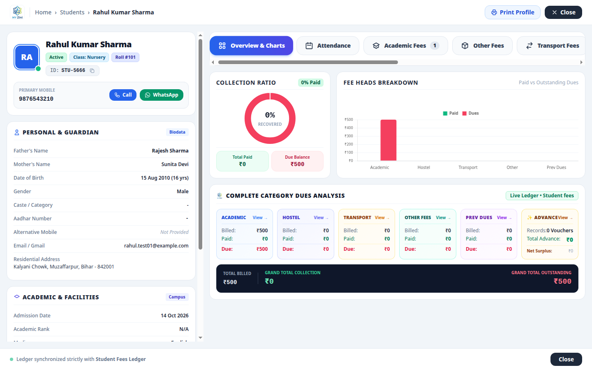
- Student Profile View: Profile par click karte hi ek clean digital dossier khulta hai jahan top par breadcrumb (
Home › Students › Rahul Kumar Sharma), Print Profile button (ek click mein student ka admission summary print karne ke liye), aur Close button milta hai. - Unique Student ID & Status Badge: Har student ko ek unique ID milti hai (jaise
STU-5666) aur green color mein Active badge dikhta hai, saath mein Class aur Roll Number. - One-Click Call & WhatsApp Buttons: Primary Mobile number ke bilkul niche Call aur WhatsApp buttons hote hain — teachers ya fee clerk yahin se ek click mein parents ko call ya WhatsApp reminder bhej sakte hain.
- Organized Biodata Sections: Niche PERSONAL & GUARDIAN (Father's Name, Mother's Name, Date of Birth with calculated age, Gender, Caste/Category, Aadhar Number, Alternative Mobile, Email/Gmail, Residential Address) aur ACADEMIC & FACILITY sections saaf-suthre cards mein dikhte hain.
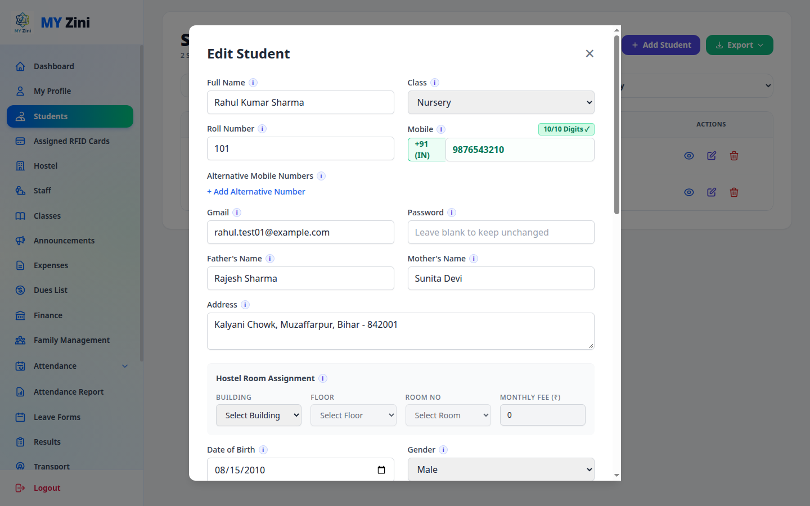
Edit Button: Agar kabhi kisi student ka mobile number badal gaya ho, class promote karni ho, hostel room change karna ho, discount dena ho, ya use Inactive (Left School) mark karna ho, toh Edit button par click karein. Wohi poora form pre-filled data ke saath open ho jata hai jahan aap koi bhi field update karke save kar sakte hain.
5. Upload Bulk (4-Step Wizard): Excel, CSV aur Google Sheets se 1000 Students Ek Saath Import Karein
Agar aap naye-naye My Zini Digital ERP par shift ho rahe hain aur aapke paas pehle se Excel sheet ya Google Sheet mein saare students ka data hai, toh aapko ek-ek student manually type karne ki zaroorat nahi hai. Toolbar mein Upload Bulk button par click karein:
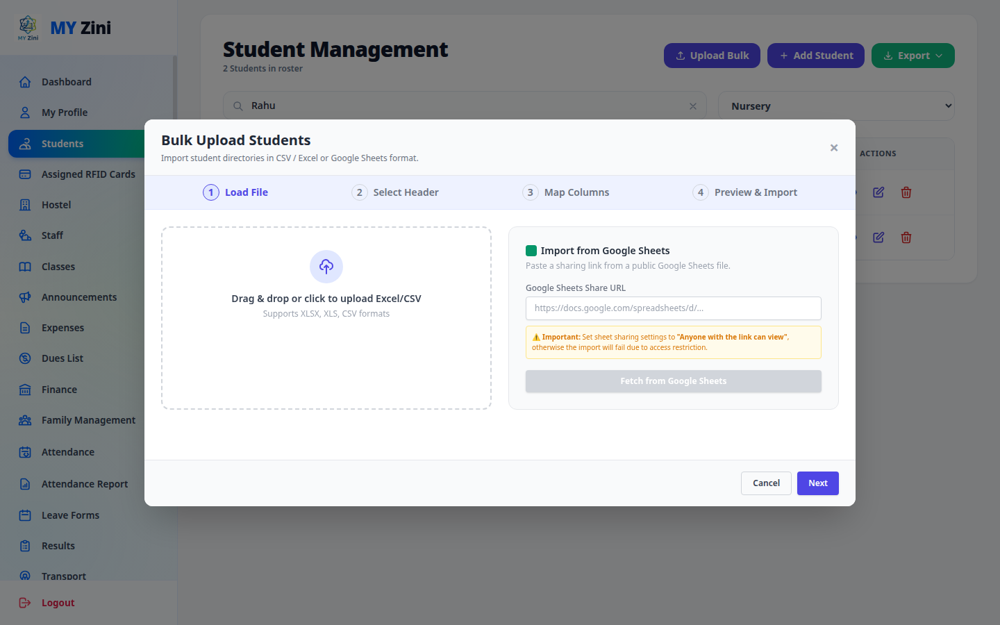
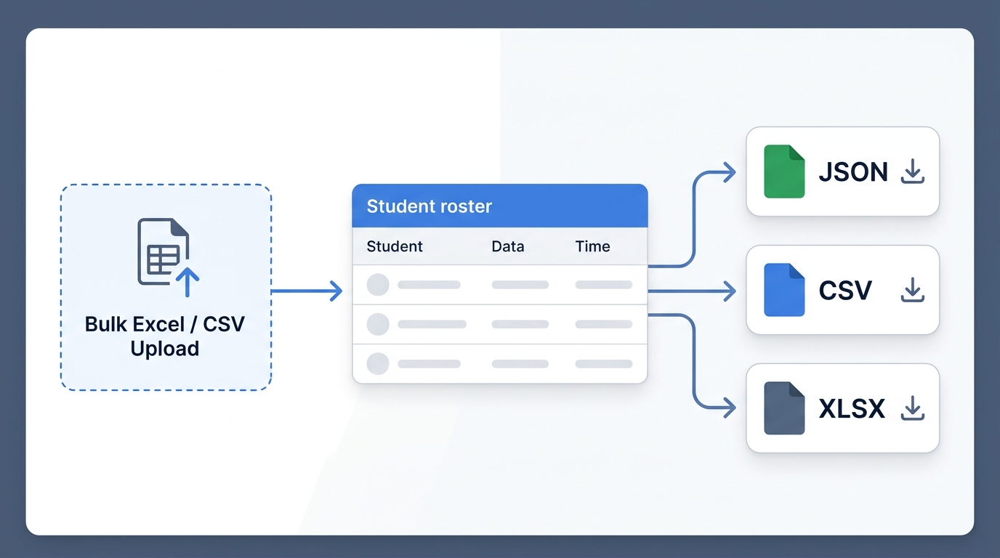
Yeh Bulk Upload Students tool ek smart 4-Step Wizard par chalta hai:
- Step 1 — Load File: Yahan aapko do tareeke milte hain:
- Drag & drop or click to upload Excel/CSV: Yeh
XLSX,XLS, aurCSVteeno formats support karta hai. - Import from Google Sheets: Apni Google Sheet ka link Google Sheets Share URL box mein paste karein aur Fetch from Google Sheets dabaein. Zaroori Tip: Jaise screen par warning likhi hoti hai, import se pehle Google Sheet ki sharing setting ko "Anyone with the link can view" zaroor set karein, warna access restriction ke karan import fail ho sakta hai.
- Drag & drop or click to upload Excel/CSV: Yeh
- Step 2 — Select Header: Apni sheet ki header row select karein jahan column names (Name, Class, Roll, Mobile) likhe hain.
- Step 3 — Map Columns: Apne Excel/Google Sheet ke columns ko My Zini ERP ke fields ke saath match (map) karein.
- Step 4 — Preview & Import: Final import se pehle poora data preview check karein aur confirm karke ek click mein sabhi students ko roster mein add kar dein.
6. Export Button: Student Roster ko JSON, CSV ya Excel (.xlsx) mein Download Karein
School audits, government UDISE+ reporting, offline backup ya Excel analysis ke liye aapko kabhi bhi student list download karni pad sakti hai. Iske liye Add Student ke right side mein maujood Export button par click karein:
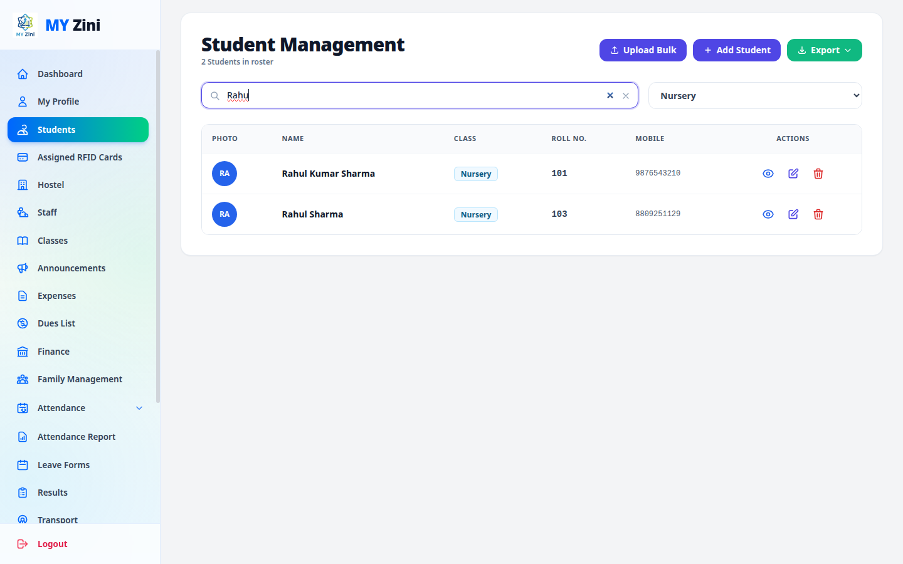
- JSON Format: Technical backups, API integrations ya developers ke liye clean structured JSON file.
- CSV Format: Universal comma-separated file jo Google Sheets, Tally ya kisi bhi database mein aasani se khulti hai.
- Excel (.xlsx): Direct Microsoft Excel spreadsheet format — school staff aur principals ke liye sabse convenient option.
7. School Admins ke Liye Pro Tips (Best Practices)
- Mobile Number Hamesha Sahi Bharein: Kyunki Student Login aur Profile ke Call / WhatsApp buttons isi number par kaam karte hain, admission ke waqt 10-digit parent number zaroor verify karein.
- School Chhodne par Delete Nahi, Inactive Karein: Purane financial records aur fee history safe rakhne ke liye student ko Edit karke Inactive (Left School) mark karein — isse aapke Dashboard par Inactive Students ka sahi record bhi bana rahega.
- Har Mahine Excel Export Backup Lein: Bhale hi My Zini cloud par live sync hota hai, phir bhi mahine mein ek baar Export → Excel (.xlsx) karke local backup rakhna ek achhi habit hai.
Frequently Asked Questions (FAQs)
1. Kya main ek saath 500 students ko Excel ya Google Sheets se upload kar sakta hoon?
Haan! Upload Bulk button par click karke aap 4-step wizard (Load File → Select Header → Map Columns → Preview & Import) ke zariye XLSX, XLS, CSV ya public Google Sheets link se saare students ek saath import kar sakte hain.
2. Kya Add Student form mein Hostel aur Transport fees dono ek saath set ho sakti hain?
Bilkul. Add Student modal mein Hostel ke liye Building, Floor, Room No, Monthly Fee (₹) aur transport ke liye alag se Transport Fees (₹), Previous Dues (₹), aur Discount Amount (₹) ke fields maujood hain.
3. Student Profile se direct Call ya WhatsApp kaise hota hai?
Student row par Profile click karein. Wahan Primary Mobile number ke niche direct Call aur WhatsApp buttons milte hain, saath mein Print Profile ka option bhi hai.
4. Student roster ko kis-kis format mein export kiya ja sakta hai?
Export dropdown mein aapko 3 formats milte hain: JSON Format, CSV Format, aur Excel (.xlsx).
5. My Zini Digital ERP par apne school ka registration kaise karein?
Aap Digital ERP Registration Form par jaakar sirf ₹100 Registration Fee ke saath apna school ya coaching center register kar sakte hain.
6. Kya Student Management mein Roll Number automatic generate hota hai ya manual dalna padta hai?
Aapko dono options milte hain. Add Student form mein Roll Number box khali chhodne par system automatic roll number assign kar sakta hai, ya aap apni marzi ka custom roll number (jaise 101, 102) bhi type kar sakte hain.
7. Agar kisi student ke paas ek se zyada mobile numbers ya documents hon toh kahan save karein?
Primary 10-digit mobile ke alawa form mein Alternative Mobile Numbers ka alag field diya gaya hai. Iske saath hi Student Photo (URL ya Upload button) aur Other Documents section mein Aadhar Card, Birth Certificate ya Transfer Certificate upload karke save kar sakte hain.
8. Quick Reference Summary Table (Sabhi Buttons & Options)
Neeche di gayi table mein Student Management module ke sabhi main buttons aur unke exact kaam ek nazar mein dekhein:
| Option / Button | Kahan Milta Hai | Exact Kaam |
|---|---|---|
| Search Box | Top Toolbar | Naam, Roll Number ya Mobile number se turant student dhoondhna |
| All Classes Dropdown | Top Toolbar | Play, Nursery, LKG, UKG, Class 1–12, Graduation ke hisab se filter karna |
| Add Student | Top Right | Naye student ka poora admission, hostel, transport, discount aur extra fees add karna |
| Upload Bulk | Top Right | 4-step wizard se Excel (.xlsx/.xls), CSV ya Google Sheets URL se bulk import karna |
| Export | Top Right | Student roster ko JSON Format, CSV Format, ya Excel (.xlsx) mein download karna |
| Profile | Row Actions | Student ID, Biodata, Call, WhatsApp aur Print Profile ek screen par dekhna |
| Edit | Row Actions | Student ki class, mobile, fees, hostel ya Active/Inactive status update karna |
Apne School ko Aaj Hi Digital Banayein!
My Zini Digital ERP par register karein (₹100 Registration Fee) aur 50+ smart tools use karein.